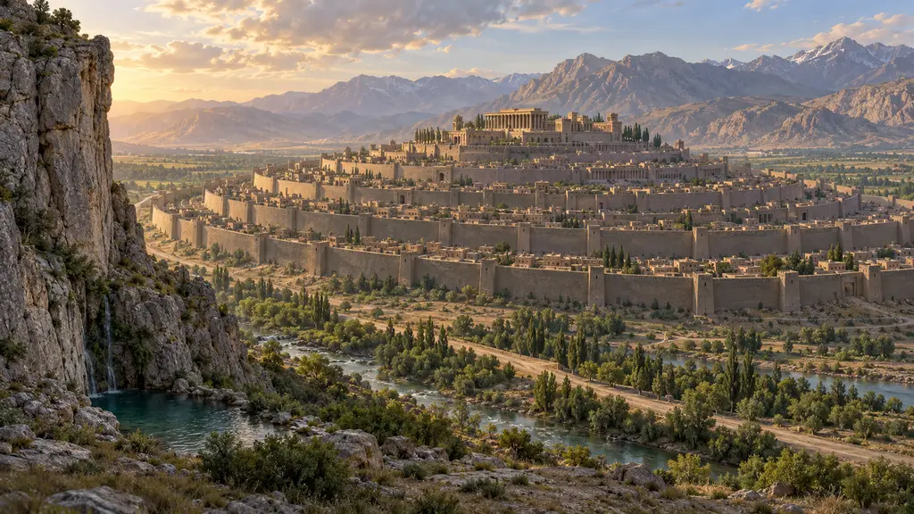
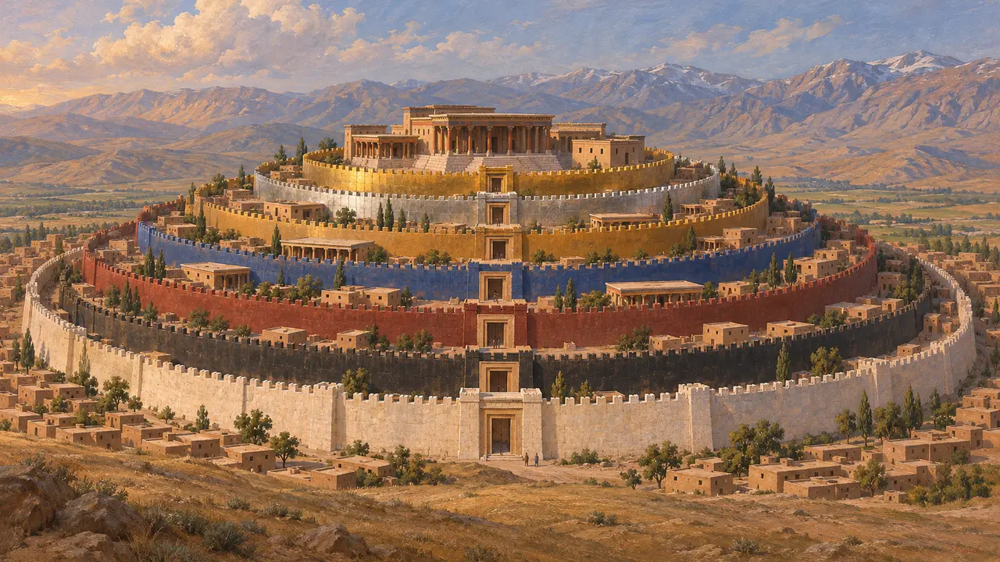
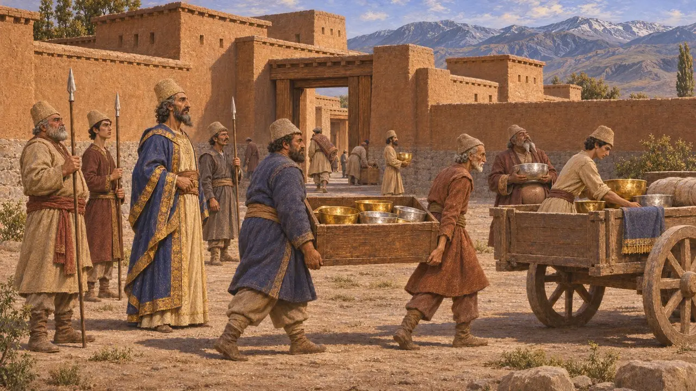
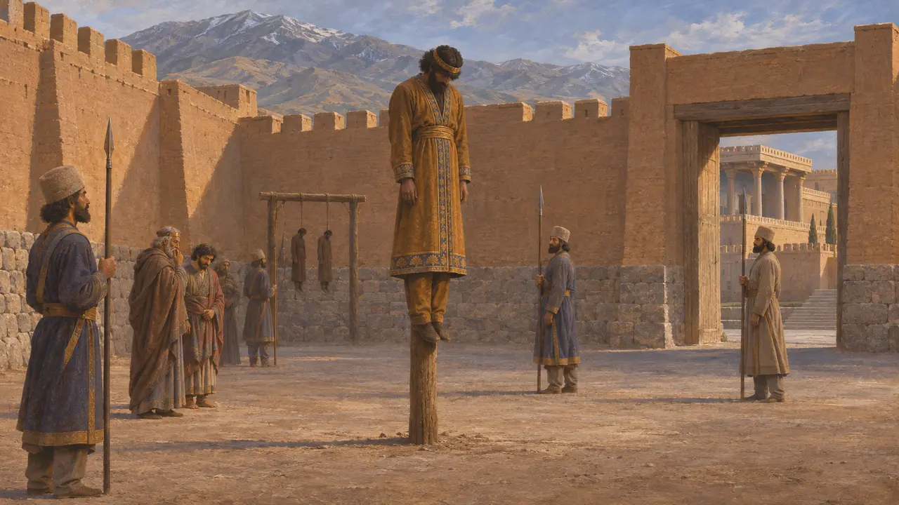
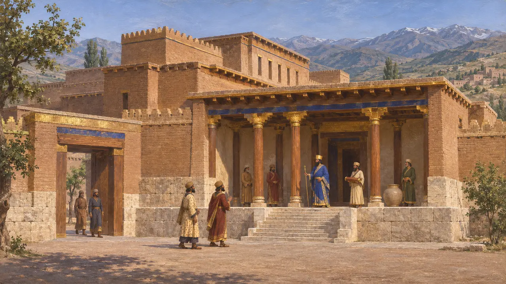
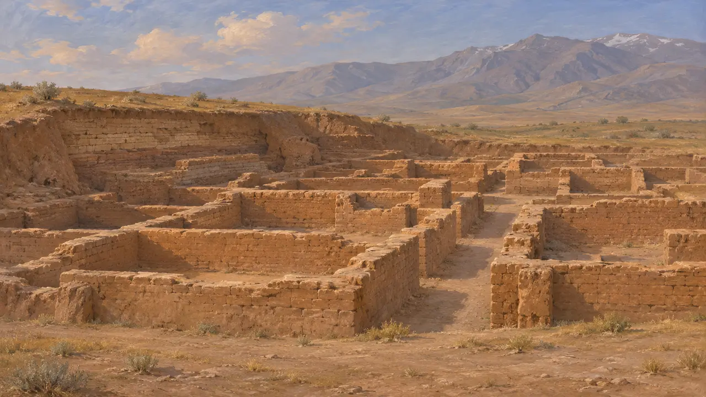

Ecbatana
Capitale meda e residenza reale persiana, l'odierna Hamadan, dal 550 a.C. circa
Nel gioco: Livello 1: La tomba del fondatore, Livello 3: La Menzogna
Ecbatana, Hagmatana in antico persiano, era la città principale dei Medi sugli altopiani dello Zagros, dove oggi sorge Hamadan. Ciro la strappò ad Astiage verso il 550 a.C. e la città rimase uno dei centri regi dell'impero. Nel 521 a.C. Dario vi fece giustiziare il ribelle medo Fravartish: la città si trovò così al cuore sia dell'ascesa persiana sia della crisi che ne seguì.
Nel gioco: Ecbatana non è uno dei livelli del gioco; la cronaca la nomina come capitale dei Medi in cui Fravartish fu messo a morte, come riporta l'iscrizione di Behistun. Le sette mura si devono soltanto a Erodoto.

La città di Deioce in Erodoto
Racconto anticoErodoto racconta che il re medo Deioce fondò Ecbatana su un colle e la cinse di sette mura concentriche. Secondo il suo racconto, i merli di ciascuna cerchia erano dipinti di un colore diverso, e quelli delle due cerchie più interne erano rivestiti d'argento e d'oro, con il palazzo del re e i tesori al centro. Nessuno scavo ha confermato questa pianta. Molti storici la leggono come un'immagine greca di una capitale orientale più che come una descrizione reale.
Herodotus 1.96-99

Conquistata da Ciro
Nelle fontiLa Cronaca di Nabonedo, un documento babilonese, narra che Astiage marciò contro Ciro, re di Anshan, e che il suo stesso esercito si ribellò e lo consegnò a Ciro. Ciro si recò allora a Ecbatana, la città regia, e portò ad Anshan argento, oro e altri beni. L'annotazione cade nel sesto anno di Nabonedo, intorno al 550 a.C., ed è l'unica testimonianza quasi contemporanea della caduta della città.
Nabonidus Chronicle (ABC 7), col. II

La fine di Fravartish
Nelle fontiNell'iscrizione di Behistun Dario racconta che Fravartish, che rivendicava il trono dei Medi come discendente di Ciassare, fuggì dopo la sconfitta e fu catturato a Raga. Dario gli fece tagliare naso, orecchie e lingua e cavare un occhio, e lo tenne in catene alla porta del palazzo, dove tutto il popolo poteva vederlo. Poi lo fece impalare a Ecbatana e lì, nella fortezza, fece impiccare i suoi principali seguaci.
DB §§24, 31-32

Una residenza dei re persiani
Racconto anticoSenofonte, nella sua vita idealizzata di Ciro, racconta che il re trascorreva due mesi estivi a Ecbatana, tre mesi primaverili a Susa e sette mesi invernali a Babilonia, poiché la città degli altipiani era fresca nella calura. Il Libro di Esdra, scritto più tardi, colloca nella fortezza di Ecbatana, in Media, un rotolo che riportava il decreto di Ciro sul tempio di Gerusalemme. Entrambi ricordano la città come sede regale dopo i re medi.
Xenophon, Cyropaedia 8.6.22; Ezra 6:2

Che cosa giace sotto Hamadan
ContesoGli scavi di Tepe Hegmataneh, ad Hamadan, hanno portato alla luce un reticolo di edifici in mattoni crudi che molti studiosi datano oggi a un'epoca posteriore agli Achemenidi, mentre i livelli di età meda e protopersiana giacciono sotto la città moderna. Gli storici discutono inoltre su quanto fosse esteso e accentrato il regno medo, poiché l'immagine di un grande impero si fonda soprattutto su Erodoto. Le tavolette d'oro a nome di Ariaramne e Arsame, che si dicono provenienti da Hamadan, sono sospettate di essere falsi o opere più tarde.
H. Sancisi-Weerdenburg, Was there ever a Median empire?, 1988
Fonti
- DB §§24, 31-32
- Nabonidus Chronicle (ABC 7)
- Herodotus 1.96-99
- Xenophon, Cyropaedia 8.6.22
- P. Briant, From Cyrus to Alexander, 2002
- H. Sancisi-Weerdenburg, Was there ever a Median empire?, in Achaemenid History III, 1988